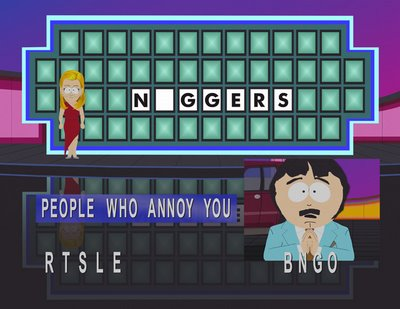

i will never understand people who miss the obvious , the way gman said "prepare for unforseen consiquences "was like a threat , that’s why eli made alyx go away , and clashed on that bed , to want to tell gordon about gman , but when he got close , gman made his best , plus take it like this , if the highest bidd’ers are supreme beings from certain species , gman is a supreme human kind of , advisors are the supreme other-living-species , it makes sense that they are in good tea drinking relationships …
About 80% of the peeps here are airheads, iky. I mean this 
It does not need to be necesserily like you said. Maybe Gordon just had to go so urgent because the “unforseen consequences” of the Borealis Technology were more important than Elis background knowledge.
in what way is a freggin metal ship more important then your fate ? [ controled by someone who plays with you like a god ]
I’d like to make some more points:
-
Isn’t it likely that after Gordon’s and Gman’s assignment is completed that he will want to leave with Gordon and Alyx and Gordon’s relationship will conflict with this?
-
Why does Gman use doors if he can teleport? I also recently finished HL1 so i could get the story aspects of it I missed. I went into a back corrider and saw Gman walk through a Black Mesa short-range teleporter. Why would he need to use this? We’ve seen him teleport by himself perfectly well without them.
-
Maybe Gordon isn’t mute but is so badass he doesn’t want to talk. Or maybe he prefers to listen and evaluate the things going on around him. Or maybe valve thought that having the main character talk would ruin some of the immersion. Like in the Metroid and Halo series (Master Chief talks very little)
-
Maybe Valve is only throwing out so much mysterious crap to entrance us and make us talk about it thus making their game more popular.
-
Gordon was hired by the Gman (in HL1 endscene). The Gman is Gordon’s employer.
-
InterloperX referred to me as “that poster”. What, I don’t get a name now?
it’s 100% that gordon isn’t mute … how would he tell people to stop or follow him? he was meant this way for each player to complete with his own impression of how it would be … the story is constructed in a way that makes you wonder about everything
The military uses hand signals to communicate in combat. Maybe that’s how he does it? Ah here we are. We’re talking about mysterious crap Valve threw at us.
Were the Vorts under Mind control or did they have restricted thinking processes when they were under the command of the Nihilanth? Because if so, how could they rebel against him?
my first guess before caring about is is that they just wanted to make shit up so you can have excuses to shoot your weapons at , not major theories like we elaborate as we speak…
I wouldn’t say 100%. Hand gestures maybe?
You never see Gordon use hand gestures. But he’s not mute. I don’t get why people focus so much on the “Gordon is mute” idea. There are a ton of protagonists that never speak. One small example of FEAR.
As for the Vort’s, who knows. Why do headcrabs walk when they can just jump everywhere? Who cares, you know?
This is the G-Man thread right?
Right on.
I think you need to put the way G-Man says everything to further review, except for perhaps “We’ll see about that.”
I never perceived that so much as a threat, but as a warning, though naturally it carried G-Man’s unknown agenda with it.
You must remember that at the time of speaking these words, Gordon is out of G-Man’s control, because of this I interpreted it moreso as G-Man’s manipulative methods at work in attempting to move his pawns across the board towards his goal.
My theory is, that without Eli to inform Alyx of the importance of these words as he heard them the first time, Alyx will interpret them as ensuring the Combine won’t acquire the Borealis technology, and further go against her fathers desire to destroy whatever it is, and instead use it. I figure this plays right into the G-Man’s agenda.
I would definitely enjoy having such a bargaining chip over said “god”, if that god is unable to acquire it themself. Though knowing what that god wants with it would be incredibly helpful too.
-
Of course, it’s G-Man.
-
To maintain the appearance of the limited human condition. There’s also the possibility that he’s apt to use the “dangling the carrot in front of the horses nose” method as well. How many times have you no-clipped to see where he’s going?
-
That whole thing about Valve, definitely yes. Still don’t get peoples desire to see out of game logic rationalized in game (personally).
-
If L4D2 is anything to go by, I think Valve gets more of a kick out of pissing off the Half-Life fans.
-
I prefer agent, but yeah employer could work too.
-
See “@ Vanusk” above.

it may be possible that gordon is fighting now to become the next gman xD
Right.
You better be joking.
I’m sorry, you misspelled “YOU BEST BE TROLLIN NIGGER”
It happened. A dumbass here finally said the word nigger.
ughhh…

[youtube]f0IVuGK7sAw[/youtube]
I think maybe that comment may be the most uncalled for, dumb ass, and ridiculous thing I have ever heard. Nice job Ihranator. Nice job. Now can we please get back on topic?
Gman is alien :fffuuu:
Task that l think of G is really to be extraterrestrial that is used in order to interact with the world for its customers who cannot in such a way act same they of the earth